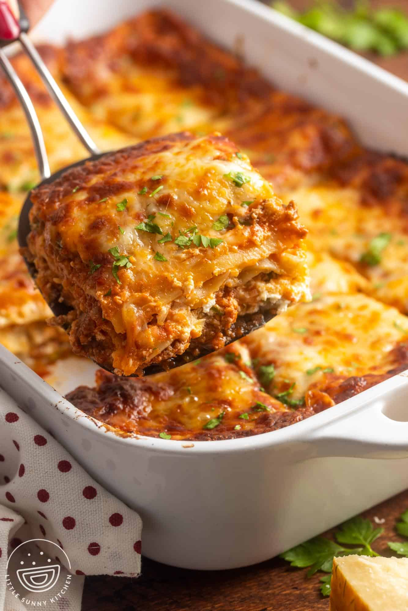

Lasagna
The classic lasagna recipe is a timeless favorite, perfect for feeding a big family and freezing well. This recipe features an easy meat sauce as the base, layered with noodles and cheese, and baked until bubbly.

Ingrediants
- 1/2 lb. ground beef
- 1 lb. hot breakfast sausage
- 2 cloves garlic, minced
- 2 (14.5-oz.) cans whole tomatoes
- 2 (6-oz.) cans tomato paste
- 4 Tbsp. dried parsley, divided
- 2 Tbsp. dried basil
- 2 1/2 tsp. salt
- 3 cups low-fat cottage cheese
- 2 eggs, beaten
- 1/2 cup grated (not shredded) parmesan cheese
- 1 Tbsp. olive oil
- 1 (1o-oz.) package lasagna noodles
- lb. sliced mozzarella cheese
Directions
- Bring a large pot of water to a boil.
- Meanwhile, in a large skillet or saucepan, combine ground beef, sausage, and garlic. Cook over medium-high heat until browned. Drain half the fat; less if you’re feeling naughty. Add tomatoes, tomato paste, 2 tablespoons parsley, basil and 1 teaspoon salt. After adding the tomatoes, the sauce mixture should simmer for 45 minutes while you are working on the other steps.
- In a medium bowl, mix cottage cheese, beaten eggs, grated Parmesan, 2 more tablespoons parsley, and 1 more teaspoon salt. Stir together well. Set aside. Add 1/2 teaspoon salt and the olive oil to the boiling water, then cook the lasagna noodles until al dente (not overly cooked). Drain.
- To assemble: Arrange 4 cooked lasagna noodles in the bottom of a baking pan, overlapping if necessary. Spoon half the cottage cheese mixture over the noodles. Spread evenly. Cover cottage cheese with a layer of mozzarella cheese. Spoon a little less than half the meat/sauce mixture over the top. Repeat, ending with meat/sauce mixture. Sprinkle top generously with extra Parmesan.
- Either freeze, refrigerate for up to 2 days, or bake immediately: 350°F oven until the top is hot and bubbly, 20 to 30 minutes.